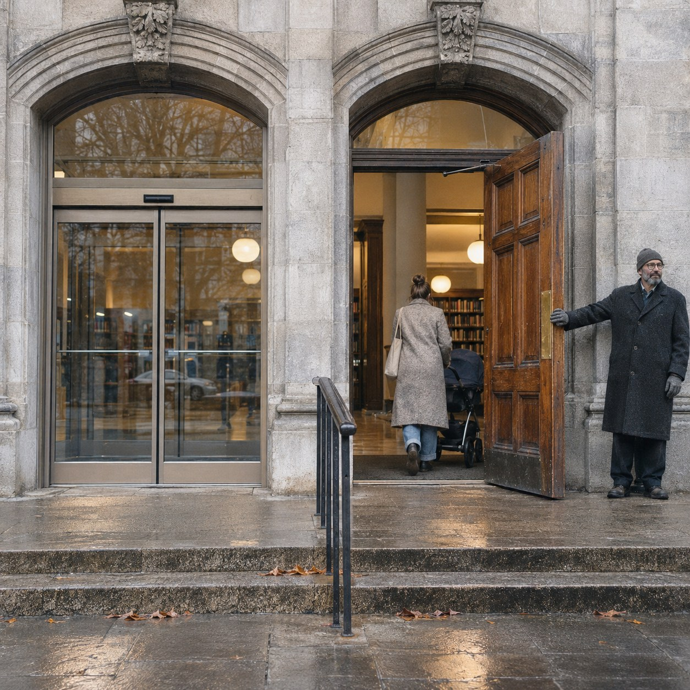

Opened by Hand

Beside the automatic doors of a public library there is an older door, heavy oak with a brass plate, that most people no longer use. For one day, from opening to closing, I stood at it and held it open.
An automatic door opens for anyone, which means it opens for no one. It does not see you. It sees movement, and it would open the same way for a dog, a gust of wind or a blown leaf. It is perfectly fair and perfectly indifferent.
A held door is the other kind of opening. It says: I saw you coming, and I waited. That is why it is short. It lasts a few seconds, it is meant for one person, and then the hand lets go.
But this door never closed. So was it held for anyone? A woman with a pram thanked me. A boy ran in without looking up. Each of them walked through a door held for them, and each of them walked through a door that would have been open anyway. I could not tell which was true, and I was the one holding it.
Lauren Lee McCarthy once spent days as a human version of a smart speaker in strangers' homes, to show the person hiding inside the machine. I went the other way. I did a machine's job by hand, slowly, to find out what the machine leaves out.
By the afternoon my arm ached, and people began to thank me differently, more slowly, as if they could see it. I still do not know whether the ache made the door more theirs, or only more mine.